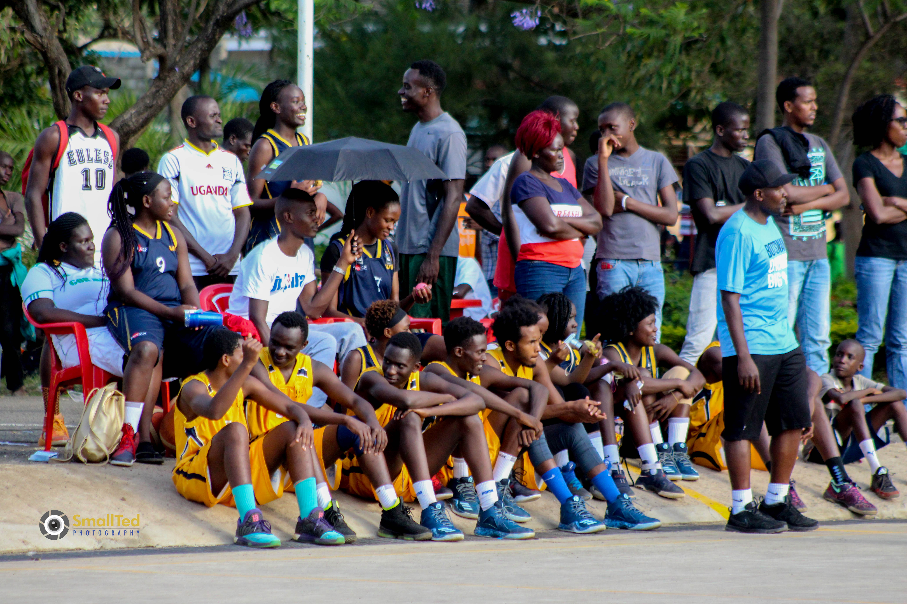
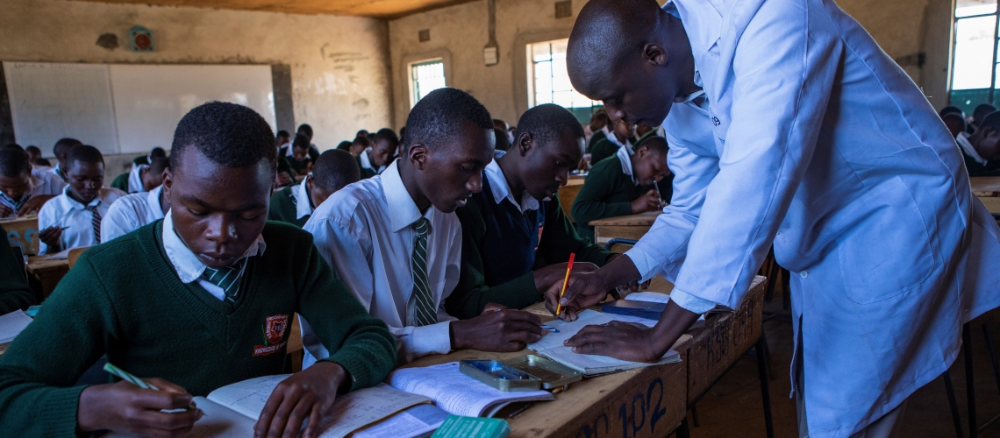
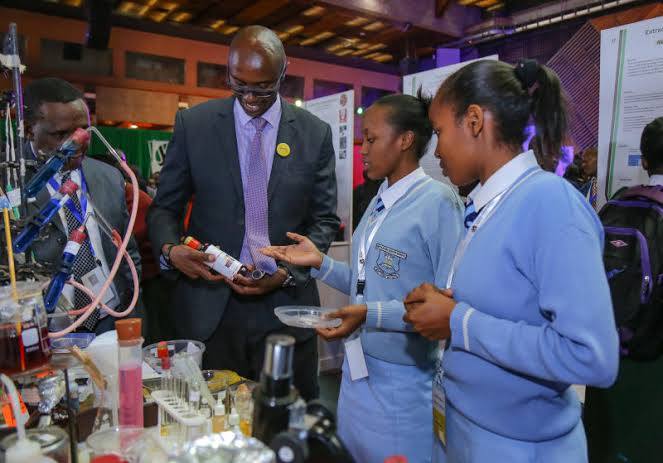

May-July is usually the month when the first parent-teacher conferences of the new school year are held. Many schools icluding ours, however, are transforming those conferences by having students play an active role in sharing their learning progress with their parents. You can learn more about student-led conferences in the Education World articles Student-Led Conferences Successful in Elementary, Middle Grades, Student-Led Conferences Hold Kids Accountable, and Student-Led Conferences: A Growing Trend. Maybe the traditional parent-teacher conference is the route your school takes. If so, you will find some useful tips in an Education World article, Meeting With the Parents -- Making the Most of Parent-Teacher Conferences. Student-led or parent-teacher conferences can be extra special if you have desserts and beverages available for parents as they wait for scheduled conferences. At St Patrics' Iten however a high school in Kenya,East Africa, the Band Booster Club sponsors the desserts, principal Phil Shaman told Education World. At kenyatta high School in central,Kenya, teachers also make themselves available for a parent-teacher conference night. "All teachers 'flex' their schedules to be available from 4 p.m. to 7 p.m.," said principal Larry Davis. "They get to go home three hours early on the next early-release day."
The Kenya Secondary Schools Sports Association (KSSSA) Term Two National School Games will return to Kisumu County for the first time since 2016 when the week-long competition kicks off on July 30. As the teams finalize to fine tune their skills ahead of the upcoming battles, we take a look at some of the changes and facts to note for this year’s event that will mark the 53rd edition of the annual inter-schools competition. This will be the final phase of the 2019 East Africa Games qualification after Term One action which was done in April in Mombasa with the identity of all the teams in basketball, hockey, rugby 15s, rugby 7s, swimming, handball, cross-country and athletics that will be competing in Arusha, Tanzania in August already known. Since the U16 football category does not feature in the East Africa scene, winners will represent Kenya in the Copa Coca-Cola Africa tournament set to be held later in the year. Entrants The event which will be held at Kisumu Day and Kisumu Boys is poised to attract more than 1,900 participants from over 100 schools which starred during regional level in the country’s eight regions last month. Also Read: Dagoretti power into KSSSA football final Serani, Koyonzo impress as KSSSA Term Two nationals kickoff We won’t condone cheats, warns KSSSA boss Ngugi as school games begin The Term Two action is featuring; football U16, football U19 , volleyball, netball, badminton, table tennis and lawn tennis while Term One comprised of basketball, hockey, rugby 15’s, rugby 7’s, swimming, handball, cross-country and athletics. Despite the Mombasa High Court’s ruling last month that scraped the age limit for students at school championships, that will not be implemented this year so players who will battle it out in Kisumu must be 19 years old and below or must be born on or after September 1 1999. Nyanza being the host region will present two teams in football both under 16 and under 19 for girls.This is because North Eastern region does not usually present teams in football for girls due to cultural related issues. Battle Royal in Football and Volleyball Without any doubt, football and volleyball will highlight the week- long event as the bigwigs are set to battle for the titles. Fourteen-time boy’s Under-19 champions Kakamega will not defend their title after falling short in County level where they lost to eventual Western region winners St.Peters Mumias. Interestingly, the latter will not compete in Kisumu after Maliki whom they met in group stages appealed against them and jury therefore ruled that both St.Peters and finalists Kibabii played ineligible players banning them for one year thus giving Ebwali from Vihiga chance to represent Western region. Ebwali had finished third after winning play-offs. With new champion now guaranteed, all eyes will be on Olbosalt of Central region whose good run in last year’s edition catapulted them to the finals losing 1-0 to Kakamega on their debut outing in the national stage. Another team to watch in this category will be Nairobi champions Dagoretti who are determined to improve from last year’s national fourth-place finish. Dagoretti colloquially referred to as ‘Ditchez’ will make their second appearance in this stage and in last year in Eldoret the Joseph Makokha coached side lost to eventual winners Kakamega on penalties in semi-finals. This year, they will be looking to go all the way to the final and secure their maiden appearance at the East Africa games after starring in the regional level. The Nairobi based team will, however, have to be at their best as they seek to overcome their Group B opponents where they are penciled to face Eastern Region champions and debutants Mbooni Boys hosts Kisumu Day and Western Region representatives. 2012 champions St.Anthony’s will highlight Pool A that also has last year’s fifth-place finishers Shimba Hills from Coast, finalists Olbolosat from Central and North Eastern representatives. In Girls’ U-19, interestingly there will also be no defending champions after Kwale Girls were disqualified from this year’s national games for fielding ineligible players during the regional level. Kwale who made history in last year after winning the regional title in their first outing in Rwanda, was replaced by the losing finalists St. Johns Kaloleni who will represent the Coast region. Last year’s finalist Bishop Njenga of Western will be out to right their wrongs where they are scheduled to play preliminary matches against Gesero of Nyanza , St. Johns Kaloleni, Central’s Kobala in pool ‘B’. The other group has Nyakach of Nyanza, Dagoretti Mixed from Nairobi, Eastern champions Karugwa and Itigo of Rift Valley. In U-16 category, where the Copa Coca-Cola slots are at stake, last year’s defending champions, both boys and girls, are notably missing from the nationals this year. St. Anthony High School (boys) and Moi Girls Nangili (Girls) were knocked out during the preliminary matches of their regional games held last month in Rift Valley and Western Region respectively. The 2016 girls’ champions Wiyeta Girls High School (Rift Valley Region) will be seeking to stamp their dominance in the girl’s category after being defeated in the finals last year against the eventual champions Moi Girls Nangili. The Rift Valley heavyweights have been pooled in group A alongside Dagoretti Mixed Secondary School (Nairobi Region), Njabini Girls Secondary School (Central Region) and Ugari Mixed Secondary School (Nyanza Region). In group B, the third runners up in last year’s championship, Coastal region champions Waa Girls Secondary School will be playing against Kobala Mixed Secondary School (Nyanza Region), Maeni Girls Secondary School (Western Region) and Itaara Secondary School (Eastern Region). In the boys category, in Pool A, Goseta Boys High School (Rift Valley Region), will be battling it out against Koyonzo Secondary School (Western Region), Serani Secondary School (Coastal region) and Gatamaiyu High School (Central Region). In Pool B, Dagoretti High School from Nairobi region will be seeking to win this years’ tournament after an impressive performance in the regional championships. They have been pooled against Agoro Sare Secondary School (Nyanza Region), Machakos Boys High School (Eastern Region) and a representative from the North Eastern Region.
The Kenya Science and Engineering Fair (Formerly, National Students’ Congress on Science and Technology) was launched in 1962 by the science teachers who were members of the then Kenya Science Teachers Association (KSTA). In its initial stages, the congress only catered for secondary schools around Nairobi. It was not until 1965 that the congress acquired a national outlook by allowing schools in the republic to participate. Entries from students were restricted to Physics, Chemistry and Biology. In 1989, the range of entries to the congress was expanded to accommodate the subjects offered in 8-4-4 curriculum. Until 1995, the venue of the congress was restricted to Kenya Science Teachers College. However, it was found necessary that the activity be reorganized in line with the Ministry of Education policy governing all the co-curriculum activities and it was resolved that the venue for hosting the event be made rotational. In line with the implementation of the country new constitution, the Ministry of Education in 2012,grouped the counties into regions to replace the provinces which were abolished. The regions were as follows. Metropolitan (Nairobi, Machakos, Makueni and Kajiado Counties) Aberdares (Kiambu, Kirinyaga, Muranga, Nyeri, Nyandarua and Laikipia Counties) Highlands (Marsabit, Isiolo, Meru, Tharaka Nithi, Embu, Kitui and Samburu Counties) Mau (Nakuru, Narok, Kericho, Bomet, Baringo, Elgeyo Marakwet, Uasin Gishu and Nandi Counties) Nzoia (Kakamega, Busia, Vihiga, Bungoma, Trans Nzoia, West Pokot and Turkana Counties) Lake (Kisumu, Siaya, Homa Bay, Migori, Kisii and Nyamira Counties) Coastal (Mombasa, Kwale, Kilifi, Lamu, Tana River and Taita Taveta Counties) Northern (Garrissa, Wajir and Mandera Counties) However, the naming of these regions changed as from the year 2017 to the names that were there before 2012. These includes; Nairobi region( 1 county), Eastern region( 8 counties), Western region( 4 counties), Central region ( 5 counties), Coast (6 counties) , Rift valley ( 14 counties) North Eastern ( 3 counties), and Nyanza region (6 counties) The KSEF has re-organized the fair both in terms of categories and mode of presentation in line with international standards. There are 11 categories for competition which include; Agriculture, Biology, Chemistry, ICT, Food Technology, Mathematics, Physics, Environmental Science, Technology, Engineering and Energy. They are soon thinking of including an extra category of social and behavioral sciences. Also, the fair has been affiliated to Intel International Science and Engineering Fair (Intel ISEF) which is always held in U.S.A in the month of May and ESKOM Expo for young scientists held in October in Johannesburg, South Africa. Four teams participated this year in the Intel ISEF competition at Los Angeles, USA. These were from SCLP Samaj School, while two schools – Stephen kositany Girls and St. Stephen Sikusi Boys secondary schools participated in South Africa International Science Fair. This year, six projects will be selected to represent the country in these fairs in October this year and in May next year.m.
